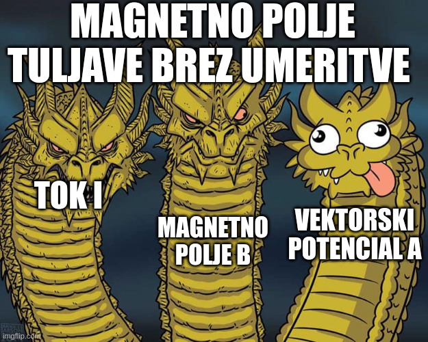

6. predavanje iz Elektromagnetnega polja
Table of Contents
1. Magnetostatika
1.1. Vektorski magnetni potencial tuljave
Za precej fizikalno lepo homogeno magnetno polje \( \vec{B} \) znotraj tuljave, je vektorski potencial \( \vec{A} \) grdoba, saj ima prostorsko odvisnost tudi zunaj tuljave

Po besedah profesorja želimo narediti bolj pohleven vektorski potencial, zaradi se poslužimo umeritve. Uvedemo nov magnetni potencial \( \vec{A} \, ' \)
\[ \vec{A} \, ' = \vec{A} + \nabla \zeta \left( \vec{r} \right) \]
Taka vpeljava je precej priročna, saj oba vektorska polja ustrezata istemu magnetnemu polju \( \vec{B} \)
\[ \vec{B} = \nabla \times \vec{A} = \nabla \times \vec{A} \, ' \]
Kot primer za \( \zeta \) lahko uporabimo
\[ \zeta \left( \vec{r} \right) = - \frac{B_0 a ^2}{2} \arctan \frac{y}{x}. \]
\( \vec{A} \) je potem definiran kot
\[ \vec{A} \, ' = \frac{a ^2}{2} \vec{B}_0 \times \frac{\vec{r}}{r ^2} - \nabla \left( - \frac{B_0 a ^2}{2} \arctan \frac{y}{x} \right) = \frac{B_0 a ^2}{2} \frac{2 \pi}{a} \delta (\phi - \pi) \hat{e}_{\phi} \]
Vedno lepši potencial, kajne?
Z dano umeritvijo je \( \vec{A} \, ' \) nič skoraj povsod, razen pri \( \phi = \pi \). Z uvedbo/uporabo umeritve lahko spreminjaš potencial \( \vec{A} \) ne da bi pri tem vplival na dejansko magnetno polje \( \vec{B} \).
1.2. Magnetna sila
Magnetna silo na vodnik se zapiše kot
\[ \vec{F} = \int\limits_{L}^{} I \, \mathrm{d} \vec{l} \times \vec{B} \left( \vec{r} (l) \right) \]
kjer je \( L \) integral po žici. Za splošno gostoto toka nadomestimo izraz \( I \, \mathrm{d} \vec{l} \) z \( \vec{\jmath} \, \mathrm{d} ^3 \vec{r} \). Naša sila se tako prevede na
\[ \vec{F} = \int\limits_V^{} \vec{\jmath} \times \vec{B} \, \mathrm{d} ^3 \vec{r} \]
Gostoto električnega toka zapišemo kot
\[ \vec{\jmath} = \rho \vec{v} = e \delta ^3 \left( \vec{r} - \vec{r} \left( t \right) \right) \vec{v} \]
Sila je potem
\[ \vec{F} = \int\limits_{}^{} e \delta ^3 \left( \vec{r} - \vec{r} (t) \right) \vec{v} \times \vec{B} \, \mathrm{d} ^3 \vec{r} = e \vec{v} \times \vec{B} \]
1.3. Kirchoffova enačba
Zanima nas osnovna enačba za vektorski magnetni potencial. Uporabimo Amperov zakon in definicijo vektorskega potenciala
\[ \mu_0 \vec{\jmath} = \nabla \times \vec{B} = \nabla \times \left( \nabla \times \vec{A} \right) = \nabla \left( \nabla \cdot \vec{A} \right) - \nabla ^2 \vec{A}. \]
Hkrati uporabimo tudi Helmholtzov izrek, ki pravi, da lahko vsako vektorsko polje zapišemo kot
\[ \vec{A} = \vec{A} _1 + \vec{A}_2, \]
kjer \( \nabla \cdot \vec{A}_1 = 0 \) in \( \nabla \times \vec{A}_2 = 0 \).
Za olajšavo uporabimo umeritev \( \vec{A}_2 = 0 \) Iz tega sledi, da je \( \vec{A} = \vec{A}_1 \) zaradi linearnosti rotorja, iz česar sledi \( \nabla \vec{A} = \nabla \cdot \vec{A}_1 = 0 \).
Dobimo Kirchoffovo enačbo
\[ \nabla ^2 \vec{A} = - \mu_0 \vec{\jmath}, \]
ki je osnovna enačba za izračun magnetnega vektorskega potenciala. Enačba je podobna Poissonovi enačbi, iz česar sklepamo rešitev
\[ \vec{A} \left( \vec{r} \right) = \frac{\mu_0}{4 \pi} \int\limits_{V}^{} \frac{\vec{\jmath} \left( \vec{r} \, ' \right)}{\left| \vec{r} - \vec{r} \, ' \right|} \, \mathrm{d} ^3 \vec{r} \,' \]
Volumnski integral teče tam, kjer je \( \vec{\jmath} \ne 0 \).
Od tod sledi Biot-Savartov zakon
\begin{align*} \vec{B} \left( \vec{r} \right) &= \nabla \times \vec{A} \\ &= \nabla \times \int\limits_{}^{} \frac{\mu_0}{4 \pi} \frac{\vec{\jmath} \left( \vec{r} \, ' \right)}{\left| \vec{r} - \vec{r} \,' \right|} \, \mathrm{d} ^3 \vec{r} \, ' \end{align*}Ker \( \nabla \) vpliva na \( \vec{r} \) in ne na \( \vec{r} \, ' \) lahko zapišemo
\[ \vec{B} \left( \vec{r} \right)= \frac{\mu_0}{4 \pi} \int\limits_{}^{} \frac{\vec{\jmath} \times \left( \vec{r} - \vec{r} \, ' \right)}{\left| \vec{r} - \vec{r} \, ' \right|} \, \mathrm{d} ^3 \vec{r} \, ' \]
1.4. Magnetna energija
1.4.1. Magnetna energija v zunanjem polju
Zamislimo si električno zanko poljubne oblike \( C \), po kateri teče tok \( I \), ki se nahaja v zunanjem magnetnem polju \( \vec{B} \). Zanko premaknemo za \( \mathrm{d} \vec{r} \). Zanima nas, koliko se je spremenila energija zanke, kar je količini dela, ki smo ga opravili.
Sila na zanko je preko definicije magnetne sile
\[ \vec{F} = \int\limits_C^{} I \, \mathrm{d} \vec{l} \times \vec{B} = I \int\limits_C^{} \hat{t} \times \vec{B} \, \mathrm{d} l, \]
kjer je \( \hat{t} \) enotski vektor na zanki. Delo, ki ga opravimo pri tem premiku, je
\begin{align*} \mathrm{d} A &= - \vec{F} \cdot \mathrm{d} \vec{r} \\ &= - I \int\limits_C^{} \left[ \left( \hat{t} \times \vec{B} \right) \cdot \mathrm{d} \vec{r} \right] \, \mathrm{d} l \\ &= - I \int\limits_C^{} \left( \mathrm{d} \vec{r} \times \hat{t} \right) \cdot \vec{B} \, \mathrm{d} l \end{align*}\( \left(\mathrm{d} \vec{r} \times \hat{t} \right) \mathrm{d}l = \mathrm{d} S \), kjer je \( \mathrm{d} S \) diferencial površine, ki jo opiše zanka ob premiku.
Torej je delo po integriranju
\[ A = - I \int\limits_S^{} \vec{B} \cdot \mathrm{d} S = - I \phi_m \]
Magnetno energijo želimo zapisati tudi z vektorskim magnetnim potencialnim poljem
\[ A = - I \int\limits_S^{} \left( \nabla \times \vec{A} \right) \, \mathrm{d} \vec{S} = - I \int\limits_{C_2}^{} \vec{A} \cdot \mathrm{d} ^3 \vec{r} + I \int\limits_{C_1}^{} \vec{A} \cdot \mathrm{d} \vec{r}, \]
Zanko smo premaknili za \( \mathrm{d} \vec{r} \). Površina \( S \) je površina plašča valja, ki ga omejujeta zanka \( C_1 \) pred premikom in zanka \( C_2 \), ki je \( C_1 \) premaknjena za \( \mathrm{d} \vec{r} \).
Posplošimo integral z gostoto toka \( \vec{\jmath} \) preko identitete \( I \mathrm{d}\vec{r} = \vec{\jmath} \, \mathrm{d} ^3\vec{r} \)
\[ A = - \int\limits_{(2)}^{} \vec{\jmath} \cdot \vec{A} \, \mathrm{d} ^3 \vec{r} + \int\limits_{(1)}^{} \vec{\jmath} \cdot \vec{A} \, \mathrm{d} ^3 \vec{r}, \]
kjer je (2) zanka po premiku in (1) zanka pred premikom. Torej je energija \( \vec{\jmath} \) v zunanjem magnetnem polju \( \vec{A} \), ki ni odvisen od \( \vec{\jmath} \)
\begin{equation} \label{eq:1} W = - \int\limits_{}^{} \vec{\jmath} \cdot \vec{A} \, \mathrm{d} ^3 \vec{r} \end{equation}1.4.2. Magnetna energija kot funkcional toka
Iz Kirchoffove enačbe vemo, da velja
\[ \vec{A} \left( \vec{r} \right) = \frac{\mu_0}{4 \pi} \int\limits_{}^{} \frac{\vec{\jmath} \left( \vec{r} \, ' \right)}{\left| \vec{r} - \vec{r} \, ' \right|} \, \mathrm{d} ^3 \vec{r} \, '. \]
Potem lahko zapišemo energijo kot
\[ W = \frac{\mu_0}{4 \pi} \int\limits_V^{} \int\limits_{V'}^{} \frac{\vec{\jmath} \left( \vec{r} \right) \vec{\jmath} \left( \vec{r} \, '\right)}{\left| \vec{r} - \vec{r} \, ' \right|} \, \mathrm{d} ^3 \vec{r} \, \mathrm{d} ^3 \vec{r} \, ' \]
Ta enačba nam pove energijo tokov \( \vec{\jmath} \) v magnetnem polju, ki ga ustvarja tok \( \vec{\jmath} \, ' \).
1.4.3. Celotna magnetna energija
Zanima nas celotna energija polja/potenciala \( \vec{A} \), ki ga ustvari gostota toka \( \vec{\jmath} \). Uvedemo parameter \( \alpha \in [0, 1] \), ki spremeni magnetni vektorski potencial \( \vec{A} \) iz \( 0 \) do \( \vec{A} \). Ker gostota električnega toka \( \vec{\jmath} \) ustvari vektorski magnetni potencial \( \vec{A} \). Pri nekem \( \alpha \) gostota toka \( \hat{\jmath} = \alpha \vec{\jmath} \) ustvari polje \( \hat{A}, \left| \hat{A} \right| \le \left| \vec{A}\right| \). Opazujemo spremembo \( \hat{A} \), če povečamo gostoto toka za \( \mathrm{d} \vec{\jmath} \).
Uporabili bomo linearnost Kirchoffove enačb
\[ \nabla ^2 \left( \hat{A} \right) = \nabla ^2 \left( \vec{A} \right) = - \mu_0 \left( \vec{\jmath} \cdot \alpha \right), \]
da je sprememba energije enaka
\begin{align*} \mathrm{d} W &= \int\limits_V^{} - \mathrm{d} \vec{\jmath} \cdot \hat{A} \, \mathrm{d} ^3\vec{r} && \mathrm{d} \vec{\jmath} = \vec{\jmath} \, \mathrm{d} \alpha; \ \hat{A} = \alpha \vec{A} \\ &= \int\limits_V^{} - \mathrm{d} \alpha \alpha \vec{\jmath} \vec{A}\, \mathrm{d} ^3 \vec{r} \\ W &= -\int\limits_0^{1} \alpha \, \mathrm{d} \alpha \int\limits_{}^{} \vec{\jmath} \cdot \vec{A} \, \mathrm{d} ^3 \vec{r} \end{align*}iz česar sledi energija celotnega magnetnega polja
\[ W = - \frac{1}{2} \vec{\jmath} \vec{A} \, \mathrm{d} ^3 \vec{r} \]
Prejšnji izraz ne upošteva, da je za vzpostavitev toka \( \vec{\jmath} \) potrebna energija - we need some energy, da se elektroni začnejo premikati. V elektrostatiki tega ni bilo, saj nabit delec ima električno polje.
Moč je po definiciji
\[ P = - U \cdot I = - I \int\limits_{C}^{} \vec{E} \cdot \mathrm{d} \vec{r}, \]
kjer je \( C \) zanka, po kateri teče tok \( I \).
Uporabimo indukcijski zakon
\begin{align*} \int\limits_{}^{} \vec{E} \cdot \mathrm{d} \vec{r} &= - \frac{\partial }{\partial t} \int\limits_{}^{} \vec{B} \cdot \mathrm{d} \vec{S} \\ \nabla \times \vec{E} &= - \frac{\partial \vec{B}}{\partial t} \end{align*}Spreminjanje magnetnega polja skozi čas ustvarja električno polje. To pretvori integral moči v
\[ P = I \frac{\partial }{\partial t} \int\limits_{C}^{} \vec{B} \cdot \mathrm{d} \vec{S} = \frac{\partial W}{\partial t} \]
Preko te enačbo prepoznamo, da velja
\[ W = I \int\limits_{}^{} \vec{B} \cdot \mathrm{d} \vec{S} = I \int\limits_{}^{} \nabla \times \vec{A} \cdot \mathrm{d} \vec{S} = I \int\limits_{}^{} \vec{A} \cdot \mathrm{d} \vec{r} = \int\limits_{}^{} \vec{\jmath} \cdot \vec{A} \, \mathrm{d} ^3 \vec{r} \]
Celotna energija magnetnega toka je
\[ W = - \frac{1}{2} \int\limits_V^{} \vec{\jmath} \cdot \vec{A} \, \mathrm{d} ^3 \vec{r} + \int\limits_V^{} \vec{\jmath} \cdot \vec{A} \, \mathrm{d} ^3 \vec{r} = \frac{1}{2} \int\limits_V^{} \vec{\jmath} \cdot \vec{A} \, \mathrm{d} ^3 \vec{r} \]
Poudarimo, da je napram enačbi \ref{eq:1}, vektorski magnetni potencial \( \vec{A} \) ustvarjen s strani toka \( \vec{\jmath} \), s katerim je skupaj v integralu.
1.4.4. Gostota magnetnega polja
Celotno energijo želimo prepisati v odvisnost od \( \vec{B} \). Uporabili bomo Maxwellovo enačbo
\[ \nabla \times \vec{B} = \mu_0 \vec{\jmath}, \]
ter identiteto
\[ \nabla \cdot \left( \vec{B} \times \vec{A} \right) = \vec{A} \cdot \left( \nabla \times \vec{B} \right) - \vec{B} \cdot \left( \nabla \times \vec{A} \right). \]
Zapišemo prej povedano celotno energijo
\begin{align*} W &= \frac{1}{2} \int\limits_V^{} \vec{\jmath} \cdot \vec{A} \, \mathrm{d} ^3 \vec{r} \\ &= \frac{1}{2 \mu_0} \int\limits_V^{} \left( \nabla \times \vec{B} \right) \cdot \vec{A} \, \mathrm{d} ^3 \vec{r} \\ &= \frac{1}{2\mu_0} \int\limits_V^{} \nabla \left( \vec{B} \times \vec{A} \right) \, \mathrm{d} ^3 \vec{r} + \frac{1}{2 \mu_0} \int\limits_V^{} \vec{B} \cdot \left( \nabla \times \vec{B} \right) \, \mathrm{d} ^3 \vec{r} \\ &= \frac{1}{2\mu_0} \left[ \int\limits_V^{} B ^2 \, \mathrm{d} ^3 \vec{r} + \int\limits_{\partial V}^{} \left( \vec{B} \times \vec{A} \right) \, \mathrm{d} \vec{S} \right] \end{align*}Rob naše prostornine \( \partial V \) je lahko v neskončnosti. Magnetno polje \( \vec{B} \) (žice) ima odvisnost \( \frac{1}{r} \). Po definiciji ima vektorski potencial odvisnost \( \frac{1}{r ^2} \). Hkrati je tudi površine našega volumna z odvisnost \( r ^2 \). Torej je celoten drugi integral obratnosorazmeren \( r \) in ko \( r \to \infty \) je integral \( 0 \).
Za divje primere, ko je žica neskončna, ima žica tudi neskončno energijo, in integral razumno divergira.
Torej zapišemo celotno energijo magnetnega polja z \( \vec{B} \) kot
\[ W = \frac{1}{2 \mu_0} \int\limits_V^{} B ^2 \, \mathrm{d} ^3 \vec{r} \]
1.5. Sila kot funkcional magnetnega polja
Imamo zanko/krompir s tokom \( \vec{\jmath} \) (porazdelitev toka), ki se nahaja v zunanjem magnetnem polju \( \vec{B}_Z \). Magnetno polje, ki ga izmerimo, pa je vsota zunanjega magnetnega toka \( \vec{B}_Z \) in magnetnega polja \( \vec{B}_L \), ki je posledica toka po zanki.
Zanima nas, kakšna sila deluje na \( \vec{\jmath} \). Za silo velja
\[ \vec{F} = \int\limits_V^{} \vec{\jmath} \times \vec{B}_Z \, \mathrm{d} ^3 \vec{r}, \]
kjer je \( V \) volumen zanke/krompirja. Gostoto toka zapišemo preko Amperovega zakona z lastnim magnetnim poljem \( \nabla \times \vec{B}= \mu_0 \vec{\jmath} \). Silo zapišemo torej kot
\[ \vec{F} = \frac{1}{\mu_0} \int\limits_{}^{} \left( \nabla \times \vec{B}_L \right) \times \vec{B}_Z \, \mathrm{d} ^3 \vec{r} \]